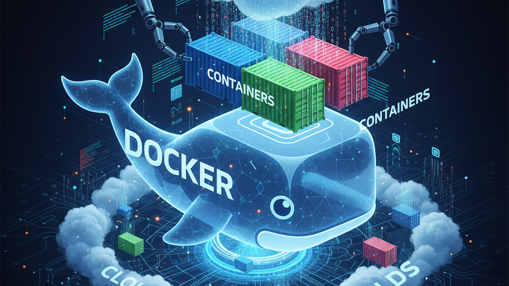
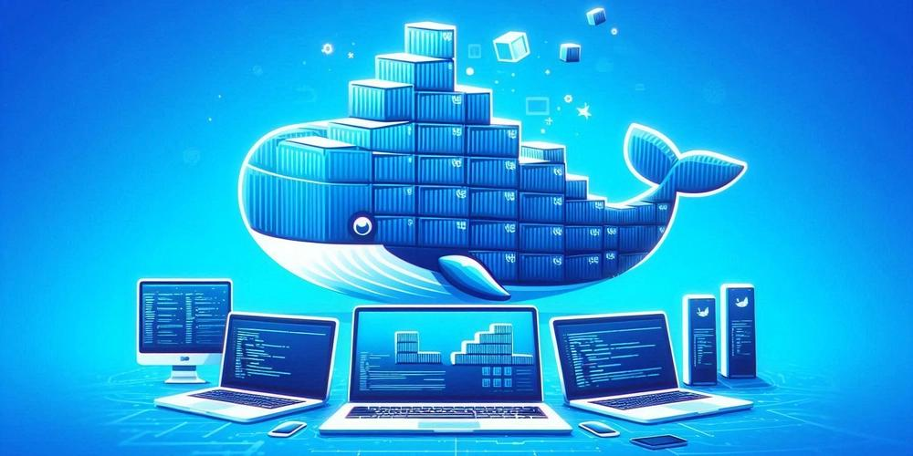
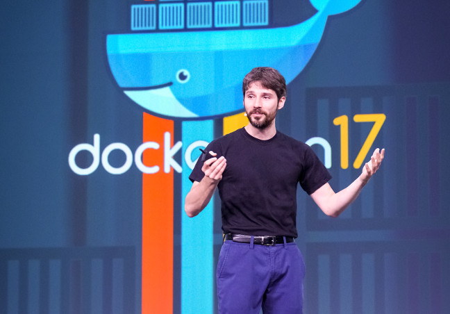
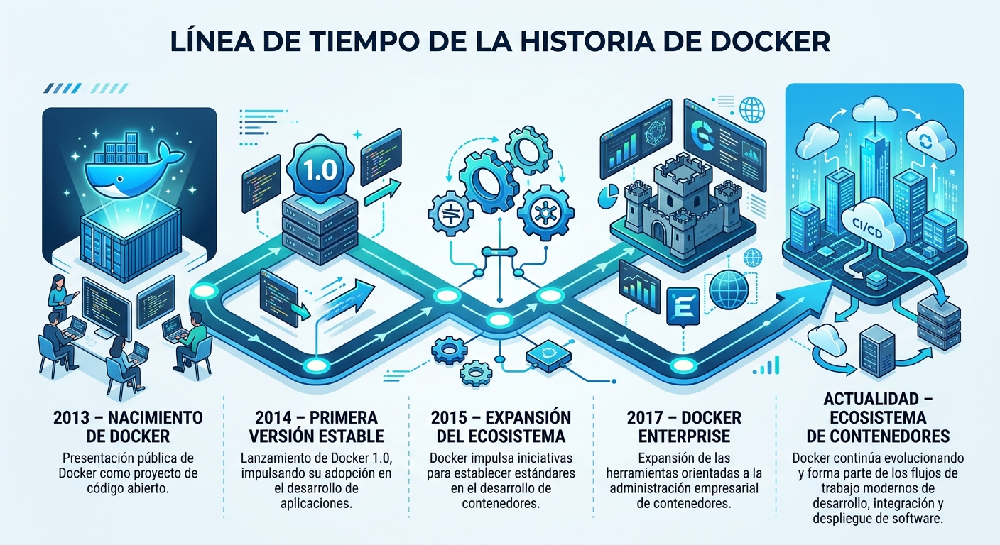

Desarrollo de software
Facilita la creación de entornos uniformes para desarrollar y probar aplicaciones.

Docker es una plataforma tecnológica que ha transformado la manera en que se desarrollan, distribuyen y ejecutan las aplicaciones. Mediante el uso de contenedores, permite empaquetar programas junto con sus dependencias, facilitando su funcionamiento en diferentes entornos y simplificando los procesos de desarrollo y despliegue.
"Construye una vez, ejecuta en cualquier entorno"

Docker es una plataforma de código abierto diseñada para crear, implementar y ejecutar
aplicaciones mediante contenedores. Estos contenedores permiten reunir el código de una
aplicación, sus bibliotecas y las configuraciones necesarias para que pueda funcionar de
manera consistente en distintos sistemas.
A diferencia de los métodos tradicionales de instalación, Docker proporciona entornos
aislados que permiten ejecutar diferentes aplicaciones sin que sus dependencias interfieran
entre sí.
Antes de la popularización de los contenedores, uno de los problemas habituales
del desarrollo de software era que una aplicación podía funcionar correctamente
en el equipo del desarrollador, pero presentar errores al ejecutarse en otro sistema.
Esto ocurría debido a diferencias entre versiones de bibliotecas, dependencias,
configuraciones y sistemas operativos. Docker ayuda a solucionar este problema al
permitir empaquetar las aplicaciones con sus dependencias en un entorno controlado.
Imagina que desarrollas una aplicación en tu computadora utilizando Java y MySQL.
Cuando intentas ejecutarla en otra computadora, pueden aparecer problemas porque
no tiene las mismas versiones o configuraciones.
Con Docker puedes empaquetar los componentes necesarios para que el entorno de
ejecución sea consistente, reduciendo esos inconvenientes.
Docker fue presentado públicamente en marzo de 2013 durante la conferencia PyCon,
por Solomon Hykes, como parte de la empresa dotCloud. Inicialmente surgió como un
proyecto para facilitar la creación y administración de entornos de aplicaciones aislados.


Docker tiene un papel importante en el desarrollo moderno porque permite simplificar
tareas que tradicionalmente requerían configuraciones manuales y entornos diferentes.
Su utilización resulta especialmente relevante en los siguientes ámbitos:
Facilita la creación de entornos uniformes para desarrollar y probar aplicaciones.
Permite distribuir y ejecutar aplicaciones en diferentes infraestructuras.
Facilita los procesos de integración, pruebas y despliegue de software.
Permite ejecutar diferentes componentes de una aplicación en contenedores independientes.
Una breve descripción de las siguientes secciones: